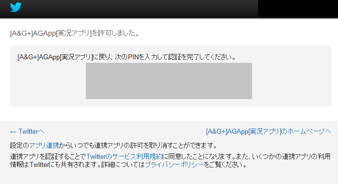

Twitter実況
Twitterアカウントを登録することで、Twitter（#agqr）の実況とツイートが可能です。（1〜7は初回のみの設定でOKです）
1.画面よりTwitter実況タブを選択し、「Twitterアカウント設定ボタン」を押す。
2.ダイアログが開くので、「追加」ボタンを押します。
3.ブラウザが開くので、ユーザ名・パスワードを入力して連携してください。
4.連携が完了したら、画面にPINが表示されるのでコピーしてください。

5.コピーしたPINを「認証PIN」の項目に入力し、「UserID」の項目に自身のユーザ名（メールアドレス）を入力し、「承認する」ボタンを押します。
6.連続して「メインにする」ボタンを押します。
7.ダイアログを閉じます。
8.表示内容や自動ロードの切り替えは、ボタンを押して切り替えてください。
自動ロードのタイミング以外でロードしたい場合は、手動ロードボタンを押してください。
ツイートはツイートを入力して「POST」ボタンを押します（#agqrタグは自動付加されます）